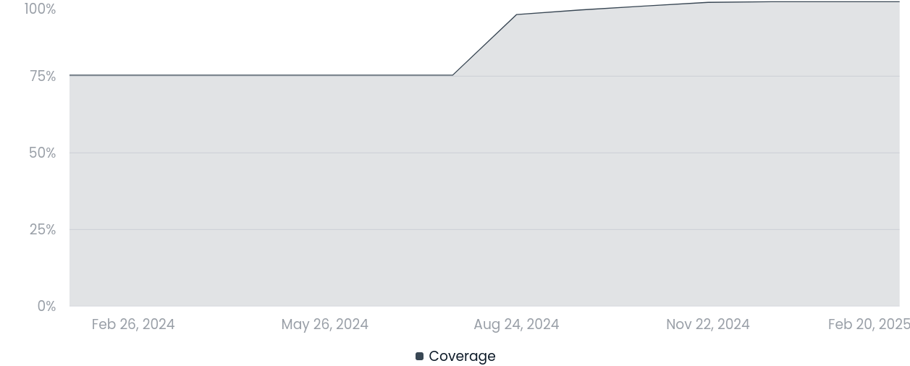

The road to Luminescence 1.0
We are happy to announce that the Luminescence R package has finally reached version 1.0.0. This is an important milestone, not only in the history of the Luminescence package, but also for the REPLAY project.
This makes it the third release since the start of the REPLAY project:
-
Version 0.9.25 was released in September 2024, just over a month into the project, and it already contained a large number of changes (422 commits)
-
Version 0.9.26 was a minor release (73 commits) to fix a couple of small regressions that we didn’t want to affect our first REPLAY webinar
-
Version 1.0.0 contains most of the work that has occurred between September and February (886 commits) in a number of key areas, which we’ll outline below.
Testing and coverage
One of the first areas of focus of our work was to enhance testing and coverage of the package. Testing allows to record what the expected behaviour of any function is, so that no unexpected changes should go unnoticed. Coverage measures how many lines of code are reached by tests: the higher the coverage, the more confidence we have that tests are able to exercise all parts of the code. Therefore improving testing and coverage go together.
Code coverage went from 76.3% (v0.9.24) to 95% (v0.9.25) to 99.2% (v1.0.0). As of now there are only 202 uncovered lines out of 27865 in the whole package. Most of them are rare error conditions that are quite hard to find examples for, or that depend on lack of numerical convergence in some fitting procedure.

In order to achieve that, we more than doubled the number of tests in the package (from 1273 in v0.9.24 to 2897 in v1.0.0). But the improvement is not limited to the sheer number of tests: we introduced snapshot tests, which allow to compare numerical and graphical output of a function against reference results. At the moment we have snapshots for 33 functions, but this work will continue in the future with a stronger focus on the graphical tests (issue 243).
Input validation and fuzz testing
We also payed attention to input validation and error reporting. Now the package is a bit stricter in what it accepts. This brings a number of advantages:
-
when a function is called with the wrong argument type, it will return a clear error rather than a mysterious message from some base R function
-
the error reported use some standardized internal validation functions, so that the thoroughness of the checks and the error messages reported are consistent throughout the package
-
as these check occur at the beginning of each function, they normally appear very quickly, rather than after expensive and time-consuming operations
-
having function arguments validated at the beginning allows for the rest of the code to trust the values it receives, so the code can sometimes be simplified a bit.
As a way to help us find which functions could have their validation steps improved, we started developing the experimental CBFT package. This is still ongoing work and is being tracked in issue 439.
Performance improvements
With greater testing available, we could start making more invasive changes to the package functions with no fear of introducing new bugs or regressing the expected behaviour. In most cases, these changes produced only minor performance improvements, however three functions were worked on more intensely and lead to visible speed-ups.
Function read_BIN2R() has always been a frustrating one to use, feeling
too slow for large files. In issue 298 we tackled this problem,
and we obtained a 50% improvement when reading a 46M BINX file, which should
even larger for larger BIN/BINX files. Along the way we fixed a number of
corner cases which should make the package more resilient when reading
malformed or anyway unusual files.
Another problematic area was in the vertical sliding algorithm of
analyse_IRSAR.RF(). In issue 372 we noticed that in the C++
implementation a double vector lookup was done within an inner loop while
it could be done outside of that loop. This alone helped cut ~20s on a test
file we were using (from ~55s to ~32s). Furthermore, after looking at the
code in detail, we realised that a step of the vertical sliding was performed
across 10 windows of growing size, the first of which was definitely too
small to be of any value. Therefore we fixed how such window sizes were
defined, let the number of windows to be user-controlled (via the new
num_slide_windows option for the method_control argument), and changed
the default from 10 to 3 windows. This brought down the execution time to
11s, that is 5 times faster that before.
A last sizeable improvement occurred for function calc_Huntley2006() in
issue 258. Also in this case there were computations that were
performed repeatedly in a loop (using mapply() this time), while they could
be performed just once as they were independent of the loop variables. We
also noticed that the number of points tested for rho' was strangely
dependent on the number of Monte Carlo iterations required: this didn’t make
much sense, so we changed the default to 1000 equally-spaced points in the
interval [0, 3] (and added option rprime to let the user override it if
required). Overall we got a 4x speed-up when running a test file for 50,000
MC iterations (from ~230s to ~62s).
The road ahead
Having accomplished the first milestone for the REPLAY project, now the focus will move on to other areas, mainly on the design and development of an interactive graphical interface to facilitate the use of the Luminescence package. While work on maintenance and improvement of the package will continue, we expect to have far fewer changes (in particular breaking changes) than before.
As always, bug reports are very welcome, in particular if you spot regression or performance problems. And if you’d like to contribute new functionalities or bug fixes, check out our guidelines for contributors.